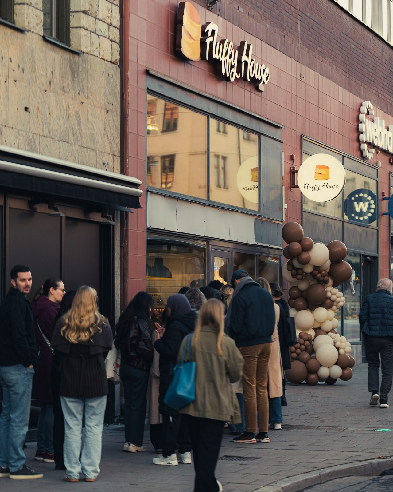
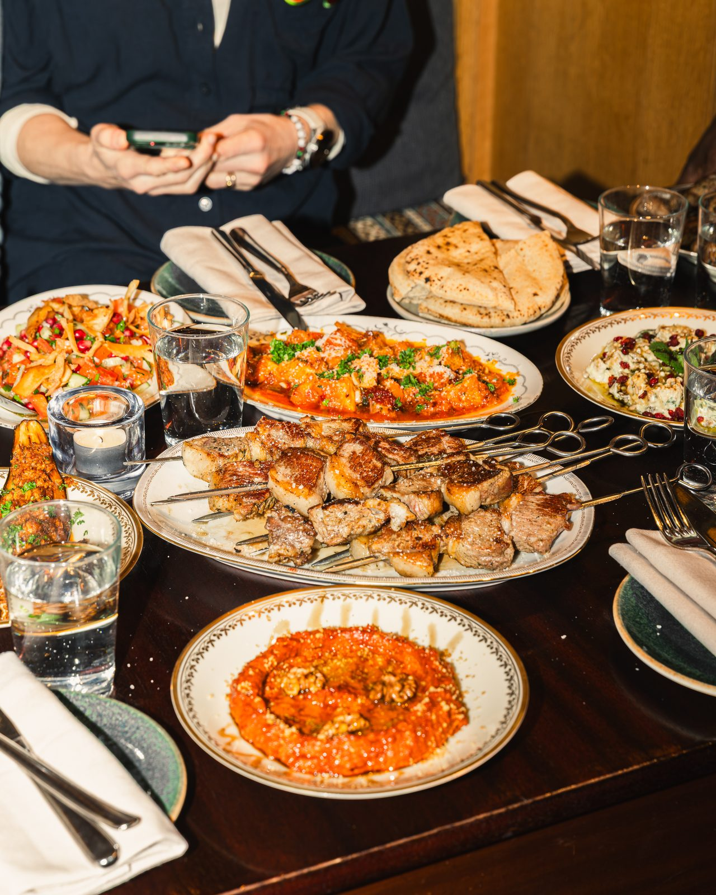
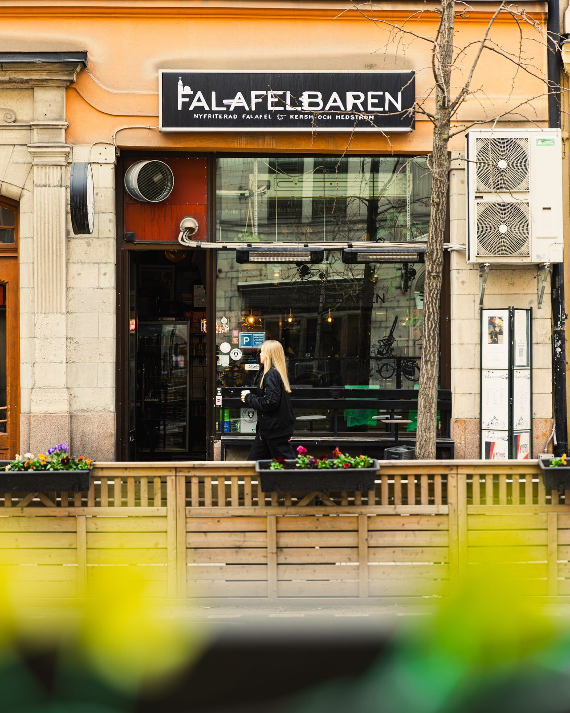
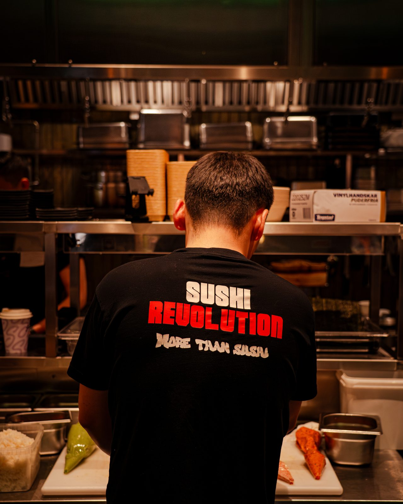
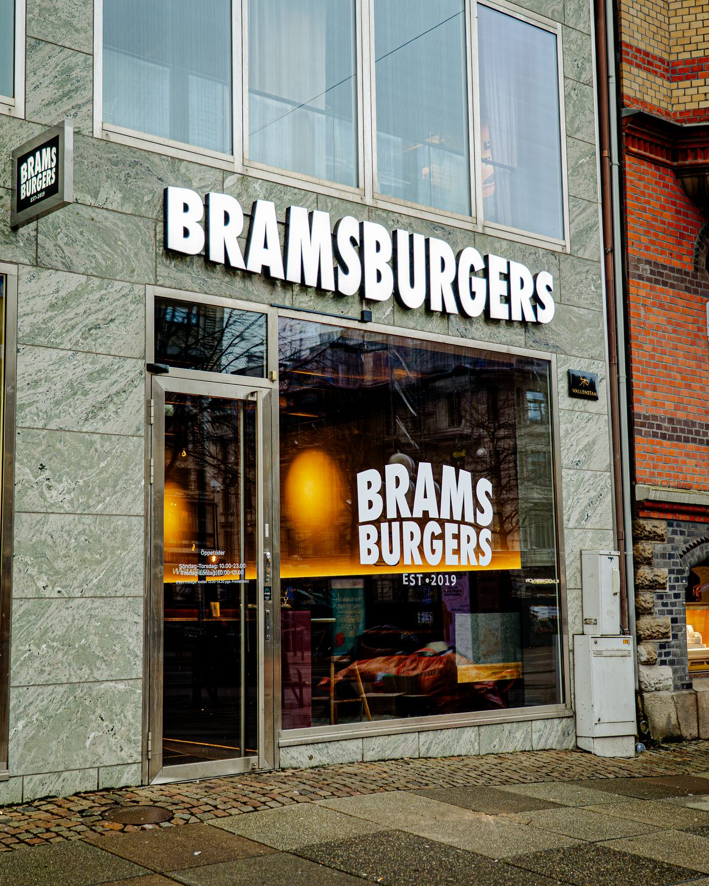

Ett upplägg där varje såld tjänst ger kickback till Qopla och en fast ersättning till säljaren som stängde affären.
Vem gör vad, vem fakturerar, när kickbacken betalas.
Sociala medier, hemsida, SEO och menyfotografering.
Per tjänst: pris till kund, kickback till Qopla, ersättning till säljaren.
Fem restauranger med riktiga siffror från Metricool.
Qoplas säljare erbjuder tjänsten i samma samtal som kassan eller onlinebeställningen.
Restaurangnamn, kontakt och vald tjänst i #hemsidor-synsnu-qopla på Slack.
Avtal signeras digitalt, sen bygger, filmar eller fotograferar vi. Kunden får en kontaktperson hos oss.
Qopla har ingen fakturering eller support att sköta. Vi tar hela kundrelationen.
Rapport till Qopla varje månad med varje såld tjänst, kickback och säljarersättning. Qopla fakturerar Syns Nu.
Inspelning på plats varje månad, klippta videos och bilder, publicering på Instagram, TikTok och Facebook, Google-profil.
Från 7 500 kr/mån · 3 mån bindningMobilanpassad restauranghemsida med meny, öppettider och Beställ online direkt till Qopla. Klar på en vecka.
4 000 kr engångs via QoplaTeknisk optimering varje vecka, Google-profil och recensioner, synlighet i AI-sök. Ett fast pris, allt ingår.
1 000 kr/mån · 24 månHela menyn fotograferad och stylad på plats, redigerad och klar för Qopla, Foodora, Wolt och hemsidan.
5 000 kr engångs via Qopla · ordinarie 8 000 krPriser exkl. moms. 3 månaders bindningstid, därefter 1 månads uppsägning. Extra video utöver paketet 2 500 kr.
| Tjänst | Pris till kund | Kickback Qopla | Ersättning säljaren | Status |
|---|---|---|---|---|
| Hemsida Syns Nu bygger, levererar och fakturerar kunden | 4 000 kr engångs | 1 500 kr | 700 kr | Fastställt |
| SEO-autopilot engångs vid signerat avtal, 24 mån | 1 000 kr/mån | 1 500 kr | 700 kr | Förslag |
| Sociala medier · Basic engångs vid signerat avtal | 7 500 kr/mån | 600 kr | 300 kr | Förslag |
| Sociala medier · Pro engångs vid signerat avtal | 12 500 kr/mån | 1 250 kr | 600 kr | Förslag |
| Sociala medier · Premium engångs vid signerat avtal | 20 000 kr/mån | 2 500 kr | 1 200 kr | Förslag |
| Sociala medier · Turbo engångs vid signerat avtal | 28 000 kr/mån | 2 500 kr | 1 200 kr | Förslag |
| Menyfotografering Qopla-pris, ordinarie 8 000 kr | 5 000 kr engångs | 300 kr | 150 kr | Förslag |
Kickback och ersättning betalas när avtalet är signerat och tjänsten levererad. Sammanställs i månadsrapporten den 1:a. Rader märkta Förslag fastställs tillsammans.
Engångs. Syns Nu fakturerar och levererar sidan.
Kickback vid levererad och godkänd sida.
Fast ersättning per såld hemsida, betald via Qopla.
Tio hemsidor i månaden ger Qopla 15 000 kr och säljaren 7 000 kr, utan att Qopla bygger, supportar eller fakturerar något.

Stockholm · Uppsala. Turbo-paketet sedan september 2025. På 8 månader: 8,68M visningar, 25 100 följare över tre plattformar och två fysiska expansioner.
https://www.synsnumedia.se/case-fluffy-house

Skånegatan, Stockholm. Pro-paketet sedan november 2025. På 5,5 månader: 1,42 miljoner visningar och +13 499% interaktioner.
https://www.synsnumedia.se/case-mazraa

Hornsgatan, Stockholm. Nidal Kerch och teamet. Från noll TikTok till över 1 miljon visningar på 3,5 månader — riktiga siffror från Metricool.
https://www.synsnumedia.se/case-falafelbaren

Mall of Scandinavia, Solna. Pro-paketet sedan november 2025. Helt nystartade konton — 3 655 följare och 1,72M TikTok-visningar på 7,5 månader.
https://www.synsnumedia.se/case-sushirevolution

Stockholm · Uppsala · Göteborg. Turbo-paketet sedan 2025. På 14 månader: 4,30M visningar, 25 540 följare över fyra plattformar och två fysiska expansioner.
https://www.synsnumedia.se/case-brams-burgers
Hemsidan är fastställd. Övriga rader stämmer vi av på ett möte, sedan går upplägget ut till säljarna i #hemsidor-synsnu-qopla.
Emanuel Boyaci · Syns Nu Media · emanuel@synsnumedia.com · 070-888 01 98 · www.synsnumedia.se